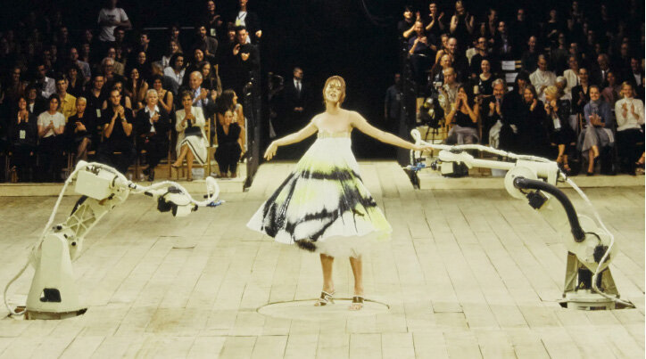

Shalom Harlow – A Fashion Icon

"You don't learn style from watching people on a runway. Fashion happens every morning when you wake up." - Shalom Harlow
Shalom Harlow was born on December 5, 1973, in Oshawa, Ontario, Canada. She was discovered at the age of 17 at a The Cure concert, and soon after began her modeling career.
In the 1990s, she became an iconic supermodel, working with top designers like
Versace,
Dior,
Chanel,
Valentino, and
Alexander McQueen. She stood out for her elegance, versatility, and a unique beauty that challenged the
conventional standards of the time.
One of her most legendary moments was the Alexander McQueen Spring 1999 show,
where robotic arms spray-painted her live on stage, creating one of the most unforgettable performances in fashion
history.
After some time away from the spotlight, she made a triumphant comeback in 2018, walking for Versace, proving that
she remains a timeless and powerful figure in fashion. In 2007, Forbes listed her as one of the world’s highest-paid models.
🎭 Why Was Alexander McQueen’s 1999 Show Controversial?
-
Technology on the Runway
- In the show’s finale, Shalom Harlow stood on a rotating platform, wearing a plain white dress.
- Two robotic arms—like the ones used in car factories—began spray painting her dress in black and yellow as
she spun around.
- It was shocking to see industrial machines interacting with a human model in a fashion show.
-
An Emotional Performance:
- Shalom wasn’t just modeling—she was performing.
- Her body language expressed vulnerability and confusion, almost like she was being attacked.
- It left viewers with strong emotions—some saw it as beautiful, others as disturbing.
-
A Statement on Fashion Industry:,
-
Many interpreted the scene as a critique of how the fashion industry controls and shapes women.
- It was also seen as a commentary on the intersection of art, technology, and identity.
-
Breaking Tradition:
- At a time when runway shows were mostly about displaying clothes, McQueen turned fashion into theater, art,
and provocation.
Shalom Harlow in Movies
In addition to modeling, she also pursued an acting career, appearing in films like Vanilla Sky and How to Lose a
Guy in 10 Days. In 2007, Forbes listed her as one of the world’s highest-paid models.

Vanilla Sky (2001)
Shalom Harlow starred alongside Tom Cruise and Cameron Diaz in this mind-bending film by director Cameron Crowe. The film explores themes of love, identity, and reality. Shalom plays the character of Julianna, a key figure in the main character's surreal journey.
This romantic comedy featured Shalom Harlow in a supporting role alongside Kate Hudson and Matthew McConaughey. The film is about a woman trying to make her relationship fail in 10 days as part of a magazine assignment. Shalom plays the role of Catherine, a colleague of the protagonist.